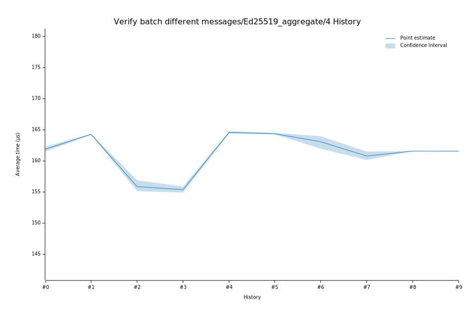

# 32023-02-08T18:56:30Z
|
Lower Bound |
Estimate |
Upper Bound |
| Value: |
154.87µs |
155.35µs |
155.86µs |
| Change in Value: |
-0.7291% |
-0.1064% |
+0.5863% |
Change within noise threshold.
# 22022-12-05T08:44:55Z
|
Lower Bound |
Estimate |
Upper Bound |
| Value: |
155.11µs |
155.87µs |
156.87µs |
| Change in Value: |
-5.5947% |
-5.1882% |
-4.8104% |
No change in performance detected.
# 12022-11-14T11:57:20Z
|
Lower Bound |
Estimate |
Upper Bound |
| Value: |
164.23µs |
164.31µs |
164.39µs |
| Change in Value: |
+1.0132% |
+1.2606% |
+1.5098% |
No change in performance detected.
# 02022-11-04T13:35:41Z
|
Lower Bound |
Estimate |
Upper Bound |
| Value: |
161.48µs |
161.91µs |
162.33µs |